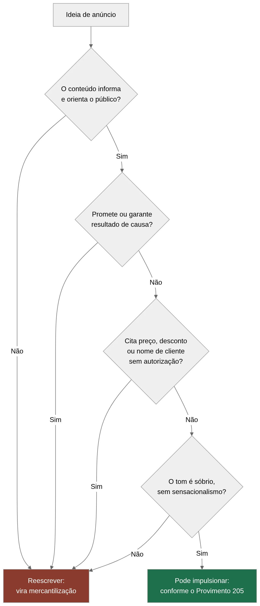

Tráfego pago para advogados: o que a OAB permite
Tráfego pago para advogados deixou de ser assunto proibido. Ainda assim, muita gente continua com medo. Você paga para aparecer no Google, o telefone toca e, no fundo, fica aquela pergunta incômoda: será que a OAB vai bater na porta?
Conheço bem essa sensação. Um advogado que atendemos publicou um post no Instagram sobre direito do consumidor, colocou dez reais de impulsionamento e apagou tudo três horas depois. Ele achou que tinha cometido uma infração grave. Não tinha cometido nada.
O problema não é a regra. O problema é a informação errada que circula por aí. Enquanto colegas hesitam, quem entendeu o jogo já capta clientes todos os dias, dentro da lei.
Então vamos direto ao ponto. Neste artigo, você vai entender o que o Provimento 205 OAB realmente diz, o que pode e o que não pode em anúncios, e como montar uma estratégia de captação segura. Sem juridiquês vazio e sem promessa mágica.
Ao longo do texto, você vai perceber que o tráfego pago para advogados é bem menos assustador do que parece. Com o método certo, ele vira aliado, não ameaça.
Se a insegurança é o que te trava, ela acaba aqui. A publicidade jurídica mudou em 2021 e segue em transformação. Quem domina esse terreno larga na frente.
O que mudou: o Provimento 205 liberou o marketing jurídico
Durante muito tempo, o advogado brasileiro viveu num limbo. Podia divulgar seu trabalho, mas com tantas restrições que quase ninguém arriscava. Aí veio 2021 e a regra mudou.
O Provimento nº 205/2021 do Conselho Federal da OAB modernizou as regras de publicidade e informação na advocacia. Ele reconheceu, de forma expressa, que o advogado pode fazer marketing jurídico. Isso inclui produzir conteúdo, manter redes sociais ativas e, sim, investir em anúncios pagos.
Antes disso, muita coisa ficava numa zona cinzenta. Depois do Provimento, o tráfego pago para advogados ganhou respaldo claro, com limites bem definidos.
Em outras palavras, tráfego pago para advogados hoje é uma ferramenta reconhecida. Você não está mais numa área proibida. Está numa área regulada, o que é bem diferente.
O que "tráfego pago" significa, na prática
Se você é leigo em marketing, vale explicar. Tráfego pago (anúncios que você paga para aparecer no Google ou nas redes sociais) é o oposto do tráfego orgânico, que vem de forma gratuita quando alguém acha seu perfil sozinho.
No pago, você define um valor e a plataforma coloca seu anúncio na frente das pessoas certas. Alguém procura "advogado trabalhista em Curitiba", seu anúncio aparece no topo. Essa é a lógica.
O ponto central do Provimento é o caráter da mensagem. A publicidade precisa ser informativa, feita com moderação e discrição. Nada de transformar a advocacia numa loja de departamentos.
O espírito da regra: informar, não mercantilizar
A OAB não quer o advogado escondido. Quer o advogado sério. Por isso, o texto do Provimento gira em torno de um princípio simples: você informa, orienta e educa o público. Você não vende a advocacia como se fosse um produto de prateleira.
Essa distinção parece sutil, mas muda tudo na hora de montar um anúncio. Um post que ensina o trabalhador a reconhecer horas extras não pagas respeita a regra. Um anúncio gritando "consultas com 50% de desconto" viola o princípio da não mercantilização.
💡 DICA VALIOSA: Antes de publicar qualquer anúncio, faça o teste do jornalista. Se o texto informa e orienta, tende a estar dentro da regra. Se ele grita, promete ou vende como mercadoria, repense antes de gastar um centavo.
Guarde essa lógica. Ela vai te guiar em cada decisão daqui pra frente.
O que PODE e o que NÃO pode segundo a OAB

Chega de teoria. Você quer saber, na prática, onde está a linha. A tabela abaixo resume o essencial do Provimento 205 OAB sobre publicidade e anúncios pagos.
| ✅ O que PODE | ❌ O que NÃO pode |
|---|---|
| Impulsionar conteúdo informativo e educativo | Anunciar preços, promoções, "liquidações" ou descontos |
| Investir em Google Ads e Meta Ads com moderação | Captar clientela de forma direta ou ostensiva |
| Manter perfis profissionais nas redes sociais | Prometer ou garantir resultados de causas |
| Publicar artigos, vídeos e materiais próprios | Divulgar valores de honorários como se fosse vitrine |
| Informar áreas de atuação e formação | Citar nomes de clientes sem autorização expressa |
| Usar identidade visual sóbria e profissional | Ostentar bens, ganhos ou resultados financeiros |
| Divulgar contato e endereço do escritório | Fazer publicidade imoderada ou sensacionalista |
| Anunciar palestras, cursos e eventos jurídicos | Oferecer serviços jurídicos junto com produtos |
Repare no padrão. Tudo que informa costuma ser permitido. Tudo que mercantiliza a profissão costuma ser vedado.
O impulsionamento pago está liberado
Este é o ponto que mais gera dúvida, então vou ser claro. O Provimento admite o marketing de conteúdo e o impulsionamento pago desse conteúdo informativo. Ou seja, você pode, sim, colocar dinheiro para ampliar o alcance de um post educativo.
É exatamente por isso que o tráfego pago para advogados funciona dentro da ética. Você não anuncia serviços como mercadoria. Você paga para levar informação útil a mais pessoas, e a OAB apoia essa lógica.
O que não pode é impulsionar um anúncio mercantilizado. A diferença não está no fato de pagar. Está no conteúdo daquilo que você paga para promover.
Aquele advogado que apagou o post do Instagram? Ele nunca precisou apagar nada. O conteúdo era informativo e o impulsionamento era legítimo. Faltou informação, sobrou medo.
Cuidado com o sensacionalismo e a promessa de resultado
Existe uma armadilha comum. Na ânsia de chamar atenção, o advogado escreve "ganhe sua ação garantida" ou "recupere seu dinheiro em 30 dias". Isso é promessa de resultado, e a OAB veda de forma expressa.
O mesmo vale para o tom. Publicidade imoderada, com apelo emocional exagerado ou linguagem de vendedor de milagre, sai da regra. A moderação não é sugestão. É exigência.
⚠️ ATENÇÃO: Palavras como "garantido", "melhor advogado", "sucesso comprovado" e "promoção" são bandeiras vermelhas. Elas transformam um anúncio legítimo em possível infração disciplinar. Reescreva sempre com foco em informar, nunca em prometer.
Na dúvida sobre um caso específico, o caminho mais seguro é consultar a íntegra da norma. As regras de publicidade da advocacia podem passar por atualizações, então vale acompanhar a versão vigente antes de cada campanha de tráfego pago para advogados. Consulte a íntegra do Provimento nº 205/2021 sempre que tiver dúvida sobre um caso concreto.
Google Ads x Meta Ads x SEO: qual canal usar
Definido o que pode, vem a pergunta prática. Onde investir? Cada canal tem uma lógica diferente e serve a um momento distinto do seu potencial cliente.
Não existe canal certo ou errado de forma absoluta. Existe o canal certo para o seu objetivo. A tabela abaixo compara os três principais.
| Critério | Google Ads | Meta Ads (Face/Insta) | SEO (orgânico) |
|---|---|---|---|
| Como funciona | Anúncio aparece quando alguém pesquisa | Anúncio aparece no feed por interesse | Conteúdo rankeia sozinho no Google |
| Intenção do público | Alta (já procura ajuda) | Média (descoberta) | Alta (procura ativa) |
| Velocidade de resultado | Rápida | Rápida | Lenta (meses) |
| Custo por clique | Maior | Menor | Zero após rankear |
| Melhor para | Demanda imediata | Reconhecimento e educação | Autoridade de longo prazo |
| Compliance OAB | Exige cuidado nas palavras-chave | Exige cuidado no criativo (imagem/vídeo) | Naturalmente informativo |
Google Ads para advogados: quem procura, encontra
O Google Ads para advogados trabalha com intenção. A pessoa já tem um problema e digita a solução. Ela pesquisa "advogado previdenciário", "como entrar com ação trabalhista" ou "meu INSS foi negado".
Nesse momento, seu anúncio aparece no topo. O clique custa mais, porém a pessoa está pronta. Por isso, o Google costuma trazer contatos mais qualificados.
O cuidado aqui está nas palavras-chave e no texto do anúncio. Você não pode prometer resultado nem usar linguagem mercantilizada. O anúncio precisa manter o tom informativo e sóbrio, mesmo no espaço apertado do Google.
Meta Ads: educar antes de vender
Já o Facebook e o Instagram funcionam diferente. Ninguém abre o Instagram procurando advogado. A pessoa está distraída, vendo fotos e vídeos. Seu papel ali é educar e despertar interesse.
Por isso, no Meta o criativo (a imagem ou vídeo do anúncio) importa demais. Um vídeo curto explicando um direito pouco conhecido rende mais do que um anúncio institucional. Você entrega valor primeiro e conquista confiança depois.
O compliance no Meta mora no criativo e na legenda. A mesma regra de moderação e caráter informativo se aplica, sem exceção.
📈 RESULTADO: Escritórios que combinam Google Ads para demanda imediata com Meta Ads para nutrir a audiência tendem a construir um fluxo mais estável de contatos. O Google captura quem já procura. O Meta aquece quem ainda nem sabia que precisava de você.
SEO: o ativo que trabalha enquanto você dorme
O SEO (otimização para aparecer de graça no Google) é o mais lento, mas o mais barato no longo prazo. Você produz artigos como este, o Google entende que você tem autoridade e passa a te mostrar sem cobrar por clique.
O melhor é que o SEO já nasce em conformidade. Para começar por aí, veja o guia de SEO local para advogados. Conteúdo educativo é exatamente o que a OAB incentiva. Por isso, tráfego pago e SEO não competem. Eles se complementam.
Como montar uma estratégia de captação em conformidade
Você já sabe o que pode, onde anunciar e qual o espírito da regra. Agora, como transformar isso numa máquina de contatos que não te deixa acordado à noite?
A resposta começa por parar de pensar em "propaganda" e começar a pensar em "informação útil". Essa mudança de mentalidade resolve a maior parte dos problemas de compliance.
Uma boa estratégia de tráfego pago para advogados não nasce do anúncio. Nasce do conteúdo. Quando você inverte essa ordem, tudo fica mais fácil e mais seguro.
Comece pelo conteúdo, não pelo anúncio
O erro clássico é criar o anúncio antes do conteúdo. Faça o contrário. Primeiro produza algo genuinamente útil: um artigo, um vídeo, um guia. Depois, use o tráfego pago para amplificar esse material.
Dessa forma, você nunca vai anunciar algo mercantilizado. Você vai sempre impulsionar informação. O compliance deixa de ser preocupação e vira consequência natural do método.
Quando o assunto é captação de clientes na advocacia, o segredo está aqui. Você não persegue o cliente. Você se torna visível e útil, e ele vem até você. Isso respeita a vedação à captação ostensiva e ainda funciona melhor.
Cuide da linguagem em cada detalhe
Revise cada palavra dos seus anúncios. Troque verbos de venda por verbos de orientação. Em vez de "contrate agora", prefira "saiba como funciona" ou "entenda seus direitos".
Evite superlativos. "O melhor escritório" é problemático. "Escritório especializado em direito previdenciário" é seguro e informativo. Pequenos ajustes de linguagem separam o anúncio legítimo da infração.
✅ CHECKLIST RÁPIDO: Antes de subir qualquer campanha, confirme: o conteúdo é informativo? A linguagem é sóbria? Não há promessa de resultado? Não há preços nem descontos? Não há nomes de clientes sem autorização? Se marcou tudo, pode publicar com tranquilidade.
Meça, ajuste e documente
Marketing sério é feito de dados, não de achismo. De nada adianta trazer visita se ela não vira contato, e é sobre isso o guia de como converter visitantes em consultas. Acompanhe quantas pessoas clicaram, quantas entraram em contato e de onde vieram. Assim você investe onde funciona e corta o que só gasta dinheiro.
Guarde também os criativos e textos que usou. Se algum dia surgir questionamento, você comprova que a publicidade tinha caráter informativo. Documentação é sua rede de proteção.
Falta assunto para anunciar? As próprias decisões do seu dia a dia rendem material, como mostramos em transformar decisões judiciais em conteúdo.
CTA 1: Ficou com dúvida se sua estratégia atual está dentro das regras? A JuriDigital faz uma análise da sua presença digital sob a ótica do Provimento 205. Fale com a gente e descubra onde ajustar antes de investir mais.
Erros comuns que colocam o advogado em risco
Depois de acompanhar muitos escritórios, percebi que os problemas se repetem. Quase sempre nascem de desinformação, não de má-fé. Conhecer os erros mais comuns te poupa dor de cabeça.
O primeiro é copiar o que outros profissionais fazem. Você vê um colega anunciando de forma agressiva e pensa "se ele pode, eu também posso". Talvez ele esteja errado e ainda não tenha sido notificado. Erro dos outros não vira permissão para você.
Fazer tráfego pago para advogados com base no que o vizinho faz é arriscado. Cada anúncio precisa passar pelo seu próprio filtro de conformidade, não pelo exemplo alheio.
Confundir alcance com mercantilização
Muitos advogados acham que investir muito em anúncios já é infração. Não é. O valor investido não determina a legalidade. O que determina é o conteúdo e a moderação da mensagem.
Você pode ter um orçamento robusto e estar perfeitamente dentro da regra, desde que promova conteúdo informativo com tom sóbrio. Da mesma forma, dez reais mal aplicados num anúncio mercantilizado já configuram problema.
Ignorar a autorização de clientes
Depoimentos convertem, mas exigem cuidado. Publicar o caso de um cliente satisfeito sem autorização expressa viola o Provimento e ainda esbarra em sigilo profissional. Nunca use nome, foto ou história de cliente sem consentimento formal por escrito.
O mesmo vale para resultados. Divulgar "ganhamos uma ação de R$ 500 mil" ostenta resultado financeiro, o que a OAB veda. Prefira falar de áreas de atuação e de como você ajuda, sem exibir troféus.
Terceirizar sem critério
Contratar uma agência que não conhece as regras da advocacia é receita para problema. Muitas empresas de marketing tratam advogado como e-commerce e sugerem promoções, urgência e apelos de venda. Isso te expõe.
Por isso, quem cuida do seu tráfego pago para advogados precisa entender de OAB tanto quanto de anúncios. Marketing jurídico não é marketing genérico. É uma especialidade.
🚀 OPORTUNIDADE: Enquanto a maioria dos colegas trava por medo ou anuncia de forma errada, existe espaço enorme para quem faz certo. O advogado que domina a publicidade em conformidade ocupa o topo do Google e das redes enquanto os outros hesitam.
Para aprofundar nos princípios éticos que sustentam tudo isso, vale conhecer o documento base da profissão: o Código de Ética e Disciplina da OAB.
CTA 2: Não sabe se sua agência atual entende de compliance jurídico? A JuriDigital nasceu para o mercado da advocacia. Solicite uma conversa e entenda como estruturamos captação dentro do Provimento 205, sem improviso.
Perguntas frequentes sobre tráfego pago na advocacia
As dúvidas abaixo aparecem em quase toda primeira conversa com advogados que querem anunciar.
Advogado pode fazer tráfego pago?
Pode. O Provimento nº 205/2021 do Conselho Federal da OAB reconhece o marketing jurídico e admite o impulsionamento pago de conteúdo informativo. O que a norma exige é caráter informativo, moderação e discrição na mensagem.
O que o Provimento 205 proíbe nos anúncios?
Proíbe mercantilizar a advocacia. Ficam de fora preços, promoções e descontos, promessa ou garantia de resultado, captação ostensiva de clientela, divulgação de nome de cliente sem autorização expressa, ostentação de ganhos e publicidade sensacionalista.
Advogado pode usar Google Ads?
Pode, com cuidado nas palavras-chave e no texto do anúncio. O espaço é curto e o risco está em apelar para linguagem de venda. Mantenha o tom informativo, sem superlativo e sem promessa, e a campanha fica dentro da regra.
Posso impulsionar um post do Instagram sobre um caso que ganhei?
Divulgar resultado de causa é arriscado. Falar em valores obtidos ostenta resultado financeiro, e citar o cliente sem autorização expressa por escrito viola o Provimento e o sigilo profissional. Prefira explicar a tese jurídica sem identificar o caso.
Quanto preciso investir para começar?
Não existe piso definido pela OAB, porque o valor investido não determina a legalidade do anúncio. O que determina é o conteúdo. Dez reais num anúncio mercantilizado já são problema; um orçamento alto promovendo conteúdo informativo continua dentro da regra.
Uma agência de marketing comum pode cuidar disso?
Pode, desde que conheça as regras da advocacia. Agências acostumadas a e-commerce costumam sugerir promoção, urgência e apelo de venda, o que expõe o escritório. Quem cuida da campanha precisa entender de Provimento 205 tanto quanto de anúncio.
Conclusão: anunciar com segurança é uma decisão, não uma sorte
Voltemos ao início. Aquele advogado que apagou o post com medo hoje anuncia todo mês, dorme tranquilo e recebe contatos de forma constante. O que mudou não foi a regra. Foi o conhecimento dele sobre ela.
O tráfego pago para advogados é permitido, respaldado pelo Provimento 205 e usado por quem entende o jogo. A insegurança que te trava não vem da lei. Vem da falta de informação clara, e você acabou de resolver isso.
Fazer tráfego pago para advogados com segurança é uma decisão consciente. Não depende de sorte nem de coragem cega. Depende de conhecer as regras e aplicá-las com método, todos os dias.
Recapitulando o essencial. Você pode impulsionar conteúdo informativo. Você não pode mercantilizar, prometer resultado ou captar clientela de forma ostensiva. A linha entre o permitido e o proibido está no caráter da mensagem, não no fato de pagar.
Google, Meta e SEO trabalham juntos, cada um no seu momento do funil. A combinação certa depende do seu público e dos seus objetivos.
Agora você tem duas escolhas. Continuar hesitando enquanto os colegas ocupam os primeiros lugares, ou estruturar sua captação de forma profissional e segura. A segunda opção não depende de sorte. Depende de método.
CTA Final: A JuriDigital cuida de marketing jurídico para advogados que querem crescer sem infringir a OAB. Fazemos uma análise da sua presença digital e montamos uma estratégia de tráfego pago em conformidade com o Provimento 205. Fale com a gente e transforme a insegurança em vantagem competitiva.